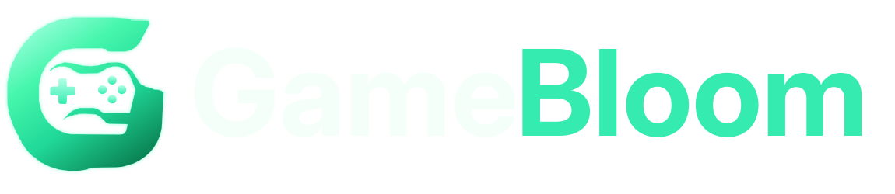
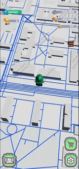
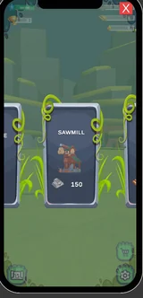
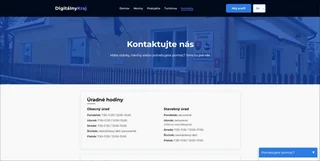

Produktová stratégia
Produktová vízia, prioritizácia, product discovery, potreby používateľov a vývoj digitálnych produktov.
Online trhoviská · Rast · Automatizácia · AI
 Mykhailo Lypenko / Portrét nie je k dispozícii
Mykhailo Lypenko / Portrét nie je k dispozícii
Som produktový manažér s technickým zázemím v informatike a informačnom manažmente. Zameriavam sa na tvorbu digitálnych produktov, zvyšovanie výkonnosti biznisu a premenu komplexných výziev na praktické riešenia pomocou produktovej stratégie, dát a automatizácie.
Viac o mneMoje zázemie spája technológie, biznis a produktový manažment. Pracoval som na digitálnych trhoviskách, e-commerce platformách, automatizácii poháňanej umelou inteligenciou a produktových konceptoch v ranom štádiu. Zaujíma ma predovšetkým to, ako môžu moderné technológie prinášať zmysluplnú hodnotu pre firmy aj používateľov.
Produktová vízia, prioritizácia, product discovery, potreby používateľov a vývoj digitálnych produktov.
Rozhodovanie na základe dát, rast online trhovísk, SEO, zákaznícke cesty a výkonnosť biznisu.
Pracovné postupy založené na LLM, automatizácia procesov, obsahové systémy a praktické využitie umelej inteligencie.
TravelTech / Online trhovisko
 MOTOURISMO
MOTOURISMO
Nábytok pre HoReCa / E-commerce · Na diaľku
Výkonnostné ukazovatele poskytnuté autorom portfólia; čakajú na finálne schválenie na zverejnenie.
Preklad odporúčania (originál v angličtine)
Mykhailo pracuje systematicky, rýchlo a otvorene komunikuje kompromisy. Rád by som s ním pracoval znova.
“Mykhailo is structured, fast and honest about trade-offs. I would gladly work with him again.”

Preklad odporúčania (originál v angličtine)
S potešením odporúčam Mykhaila Lypenka ako spoľahlivého a talentovaného špecialistu, ktorý spája biznisovú logiku, kreativitu a hlboké porozumenie digitálnym procesom.
“I am pleased to recommend Mykhailo Lypenko as a reliable and talented specialist who combines business logic, creativity, and a deep understanding of digital processes.”
 Žilinská univerzita v Žiline (UNIZA)
Žilinská univerzita v Žiline (UNIZA)
Slovensko
 Technická univerzita v Košiciach (TUKE)
Technická univerzita v Košiciach (TUKE)
Slovensko
Certifikáty o absolvovaní kurzov v rámci programu Cisco Networking Academy.
Cisco Networking Academy
Vydané
ID certifikátu: cb398a14-1605-497b-9566-72f6d7bf4f4f
Cisco Networking Academy
Vydané
ID certifikátu: 4edbc664-075b-44c2-8cfc-01e39571e6fe
Materinský alebo bilingválny jazyk
Materinský alebo bilingválny jazyk
Plná profesionálna znalosť
Profesionálna pracovná znalosť
Dobrá pracovná znalosť
Šesť vybraných projektov z oblasti gamingu, online trhovísk, e-commerce, AI automatizácie a GovTech.
Zobrazených všetkých 6 prípadových štúdií

GameBloom Oficiálny vizuál značkyGaming / Digitálne produkty
Herná platforma na objavovanie zliav na videohry, porovnávanie cien a prehliadanie ponúk naprieč digitálnymi obchodmi s hrami.
GameBloom · Oficiálna grafika Open Graph
 GameBloom / Oficiálny vizuál
MOTOURISMO / Vizuál pripravujeme
Firemná identita / Snímka obrazovky sa pripravuje
GameBloom / Oficiálny vizuál
MOTOURISMO / Vizuál pripravujeme
Firemná identita / Snímka obrazovky sa pripravuje
Rast / Online trhovisko
Organický rast a optimalizácia online trhoviska na siedmich európskych trhoch.
MOTOURISMO / Vizuál pripravujeme
Firemná identita / Snímka obrazovky sa pripravuje
Umelá inteligencia
Workflowy na generovanie a validáciu obsahu pomocou LLM pre rozsiahly katalóg digitálneho trhoviska.
Mix-Line / Vizuál pripravujeme
Firemná identita / Snímka obrazovky sa pripravuje
Produktový manažment
Vylepšenia webu a produktového katalógu, ktoré podporili viac ako 30 % rast online predaja.
 Wayflare / Pôvodné snímky obrazovky
Wayflare / Pôvodné snímky obrazovky
Hackathony
Rola: Produktový manažér
Lokalizačná mobilná dobrodružná hra, ktorá prepája objavovanie reálneho sveta s interaktívnou hrateľnosťou.
Produktový koncept, prioritizácia funkcií, zosúladenie tímu a prezentácia produktu.
Projektový tím Wayflare · Pôvodné herné rozhranie

Prieskum mapy / Obrázok nie je k dispozícii Budovanie základne / Obrázok nie je k dispozícii
Budovanie základne / Obrázok nie je k dispozícii
 Súboj / Obrázok nie je k dispozícii
Súboj / Obrázok nie je k dispozícii
 Postava / Obrázok nie je k dispozícii
Postava / Obrázok nie je k dispozícii

Obchod / Obrázok nie je k dispozícii DigitalKraj / Prehľad projektu
DigitalKraj / Prehľad projektu
GovTech / Hackathony
Rola: Produktový manažment
Digitálny komunitný portál navrhnutý na zjednodušenie prístupu k obecným službám, regionálnym informáciám, miestnym podujatiam a občianskej participácii.
Projektový tím DigitalKraj · Pôvodné snímky z README repozitára
 Prehľad projektu / Obrázok nie je k dispozícii
Prehľad projektu / Obrázok nie je k dispozícii
 Regionálny sprievodca / Obrázok nie je k dispozícii
Regionálny sprievodca / Obrázok nie je k dispozícii

Kontakty na samosprávu / Obrázok nie je k dispozícii Interaktívna mapa / Obrázok nie je k dispozícii
Interaktívna mapa / Obrázok nie je k dispozícii
Medzinárodná pracovná skúsenosť v prostredí priameho kontaktu so zákazníkmi, ktorá posilnila komunikáciu, adaptabilitu, tímovú prácu a medzikultúrnu spoluprácu.
Zaujímajú ma digitálne produkty, ambiciózne nápady a príležitosti na spoluprácu s ľuďmi, ktorým záleží na tom, čo tvoria.